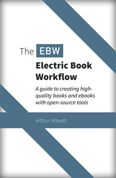

 The Electric Book workflow is a set of tools and processes for creating high-quality books. We developed it at Electric Book Works for our own publishing. It lets you store books in plain text with great version control, and output website versions, ebooks and print editions easily from a single source. At the heart of the workflow is the Electric Book Jekyll template. With some technical expertise, you can use it, too.
This guide is created with the workflow. Read it here, or download the PDF or EPUB versions.